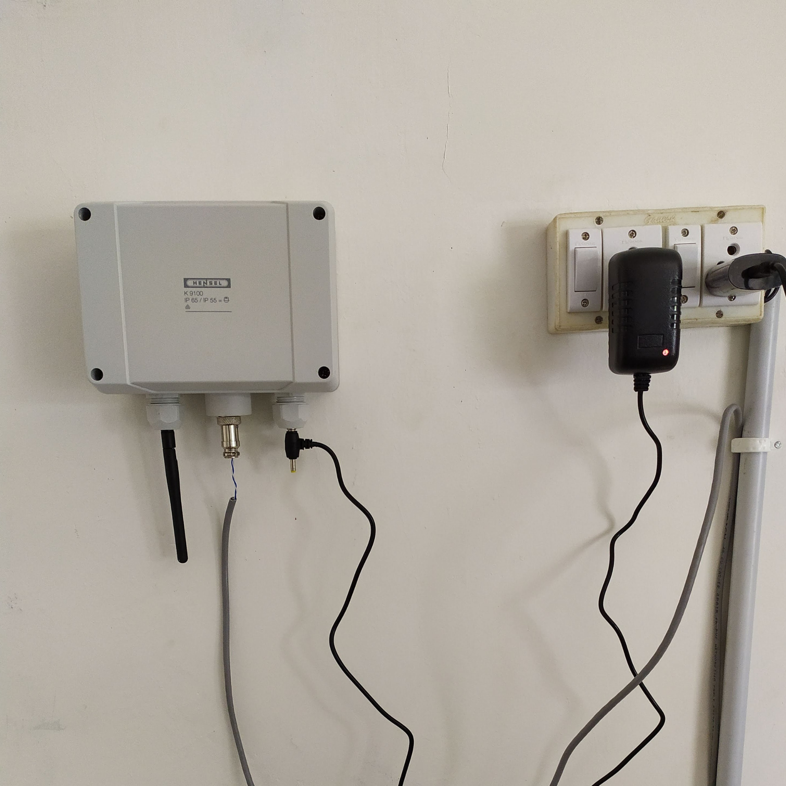
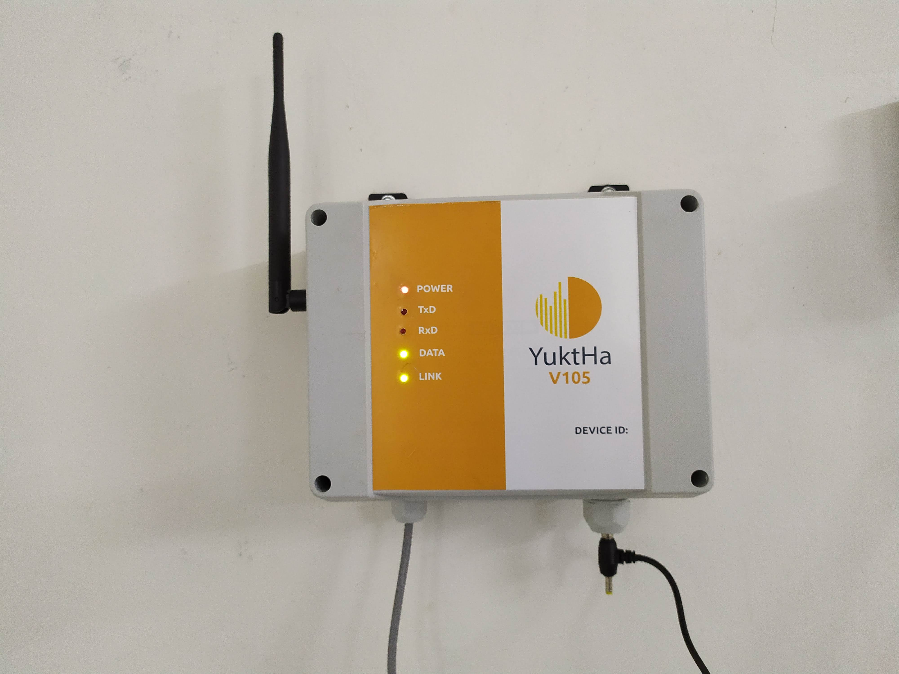

Solar Inverter Monitoring System

A solar plant in Coimbatore approached with a practical challenge. Their inverters were running reliably, but the team had no way to track performance or faults without physically visiting the site. Since their main office is about 56 kilometers away, routine checks were turning into a major time sink.
I built a remote monitoring system that links all three ABB inverters through their RS485 interfaces. The device collects key parameters from each inverter, processes the data, and makes it available through a secure, internet-connected dashboard. From their office, the team can now watch real-time performance, check energy output, and catch issues the moment they appear.

The system cuts down on unnecessary travel, improves response time during faults, and gives the plant operators a continuous view of how their solar infrastructure is performing.